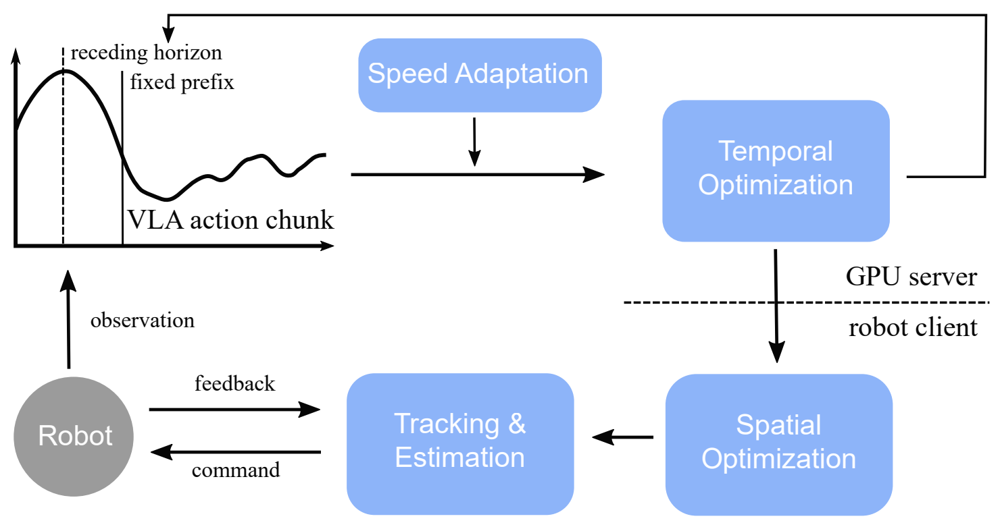

Realtime-VLA V2: Learning to Run VLAs Fast, Smooth, and Accurate
Abstract
In deployment of the VLA models to real-world robotic tasks, execution speed matters. In previous work we analyze how to make inference time of VLAs on GPU fast, and in this report we attack the remaining issues. We show a set of techniques that are important to let a light-weight robotic reach human speed with VLA generated trajectory.
The stack of technology ranges from calibration, planning and control, and learning based method to identify optimal execution speed. The end-to-end result of our methods is that on a set of real-world tasks that require both dexterity and accuracy, we let the robot execute about 3x faster than a standard execution baseline, on par with casual human operation, and close to the robot’s hardware limit.

Demo Videos
Below are three videos of the robot performing complex tasks in real environments. Each task is also accompanied by a corresponding RRD record, where one can inspect synchronized videos from three camera views together with the visualization of different trajectory curves. Across all three tasks, Realtime-VLA V2 reaches execution that is on par with casual human operation.
Citation
If you find this project useful in your research, please cite:
@article{yang2026realtimevlav2,
title={Realtime-VLA V2: Learning to Run VLAs Fast, Smooth, and Accurate},
author={Yang, Chen and Hu, Yucheng and Ma, Yunchao and Yang, Yunhuan and Tan, Jing and Fan, Haoqiang},
journal={arXiv preprint arXiv:2603.26360},
year={2026}
}